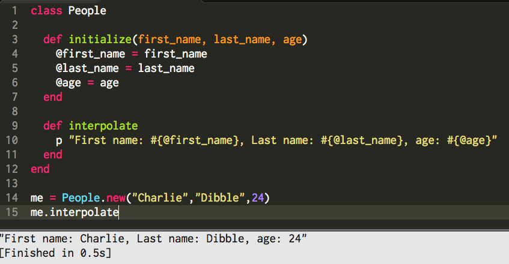

Tech: Class and Instance Methods
Saturday, September 13, 2014
When comparing class methods and instance methods, the most basic difference is that instance methods are called on an instance of the class, while class methods are called on the class name itself. Instance methods, called on objects, have access the instance variables associated with the object. Because instance variables are associated with objects, our class methods can not access them because¸ after all¸ we aren't giving it any object to look at when calling the method.
The benefits of instance methods are that we can access an objects information¸ and if we want¸ we can manipulate it to our liking. We need to have these methods because of the way objects are made. Objects all contain information, and that information applies only to that object. This is made convenient because of instance variables that are the variables that store the data associated with each object. We could do the same process without objects¸ but then we would have to create every variable for every object¸ which can be insanely cumbersome; imagine a database of a million people with all their personal information¸ and imagine how many variables you would need to hard code if we didn't have objects! So, since objects store this information so well¸ we need to have means of accessing and altering this information if necessary. This is where our instance methods come in. We may just want to ask the computer what one piece of data is, which means we would need to make a "getter" for that instance variable. To make sure we are referencing the specific variable value associated with the object, we have to call the getter method on the object itself, otherwise, how can it know what instance variable to return?
Class methods are great for storing some sort of functionality that doesn't necessarily apply to specific objects. Say we want a method that takes all the instance variables of an object and interpolates them into a nicely formatted string. This could be done by passing an object to the method and returning the interpolated string with the objects variables in the string.
Really you can make all methods class methods, but this is clunkier as you would have to pass the object in questions to each method and run the code on that object. But having instance methods allows us to skip the process of passing the object because by calling the method on that object, then it is implicit that that is the object you want to refer to.
Here is a small example of a class called People¸ with an initialization method, which is our example of a class method, and a method #interpolate, which is an instance method. On line 14 I created an object called “me” that calls the initialization method of the People class, which is using the class method to create a new object. On line 15¸ I call me#interpolate¸ which calls the instance method #interpolate that takes all the data associated with "me" and prints/returns it as an interpolated string.
